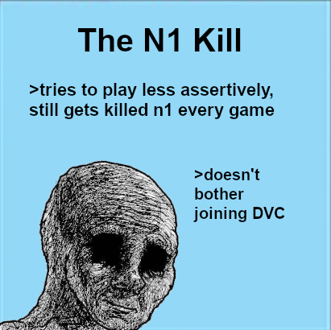

Most recent game for me was off site, so if ya looking for a link, I can give ya one.
But I’m too lazy to do it if there ain’t any demand.
As for what i learned, it’s that being suspected is sometimes unnecessarily taxing!

Most recent game for me was off site, so if ya looking for a link, I can give ya one.
But I’m too lazy to do it if there ain’t any demand.
As for what i learned, it’s that being suspected is sometimes unnecessarily taxing!
My brain is small, but what you mean by “taxing”
give it a status effect, preferably paralysis or sleep
my most recent game was thing game
i learned to be active so you don’t get lynched d1
My most recent scum games:
Thing Game
Blood on the Forums: Clown Fiesta (If you want to count that)
Quantum Mafia (If you want to count that too…)
Blood on the Forums VI: Monsta Jam - Rerolled (Same as above)
JoatJoatJoat13
My most recent town games:
Umineko FM
EFoL 4&3/4
JJBA FM
Poetry FM
Willing to explain what I learned from them if yall are interested but do tell me whether you count BotF and Quantum Mafia lol
I realized the game prior that I’m too easily townread/leaned and thus tend to be night killed rather early.
In an attempt to correct that, i tried to be a bit suspicious, which ended in about a one hour back and forth between me and that game’s cop on D1 that was basically senseless and was only wasting time/energy
nice
Somewhere out there is a sweetspot that doesn’t get me killed/lynched, i just need to find it!
That’s…
Ok… one interesting strategy I guess.
I’m assuming you get meta’d the crap ton out of?
Here you go!
For CNJ, it was that I really need to speak up louder when I’m confident in a read!
For the past few it’s that I need to stop playing when I have a headache or migraine. I was scum in Henry Stickman Vig10er and was doing really well when, at EoD1, I started suffering through a migraine and that basically tanked the game >_>
I relate to this on such a personal level.
I’ve like had to switch up my stuff so many times.
One thing I find is in the past I often got townread as scum and scumread as town.
And like I’ve had to try and force myself to change and have some sort of “tell” which I don’t even recognise now but some people like pick up on it and can correctly read me which is funny.
this entire post reeks of this

@PokemonKidRyan does that make you town read Tilgarial or suspect them?
Or how is it helping current game and why should we know it?
Not yet, but I was expecting it.
It was the attempt to prevent the logic of being alive at D2 or so = me mafia; I’m fairly sure it just hasn’t caught on because I’m just too rarely mafia for 'em to realize yet…
You can’t get meta’d if you just become the easy endgame mislonch : )
looks at Gorta
i don’t think that works chief
I mean, last game gorta was decently active! to be fair, he was the only pr but that didn’t matter
I think it’s NAI.
Also I don’t think it’s important for things to necessarily help the current game.
We have a new guest.
I am happy to be accommodating with this guest and explain my own feelings since it’s not just an individual thing.
Many people experience the same thing.
You and me both know I can be serious and focused on things.
But I don’t need every one of my posts to be this way.
And if you wish to disagree with that sentiment then just vote me because I am who I am and I’ll take your vote if it means I can interact how I want to.
And I’m happy with not having to read hundreds of posts of stuff which is plain NAI and irrelevant.
If you want to talk to someone over irrelevant stuff, go to discord.
Or discussion topic.
If you want to express something depending game, do it here.
Otherwise don’t.
Tyvm.
n0 eevee
Scum can’t read tiny text everybody knows that